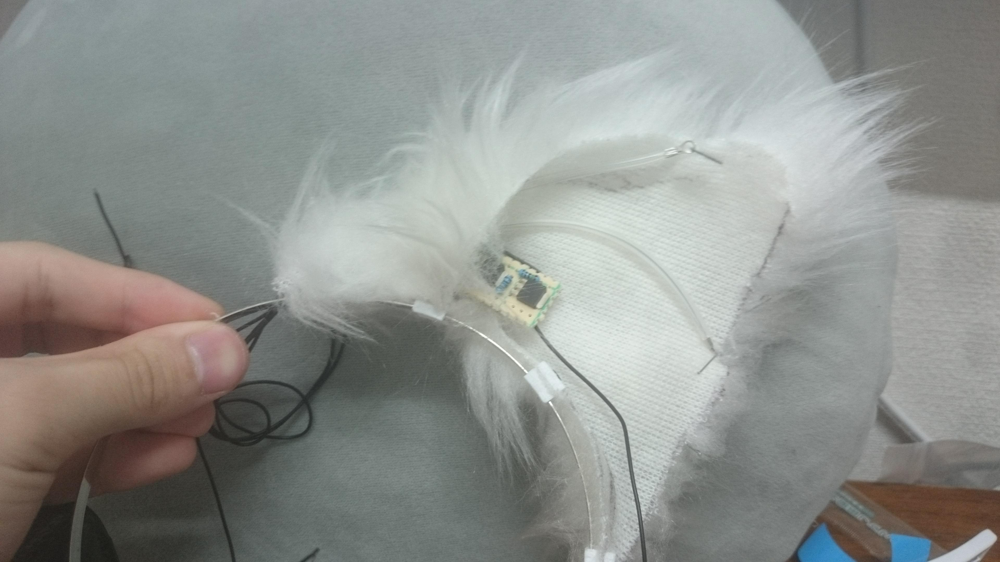

形状記憶合金を利用したアクチュエータの研究からの副産物
舞鶴高専5年のとき、卒業研究として、形状記憶合金素材を用いたアクチュエータの研究をおこなっていました。
アクチュエータとは、電気エネルギーを運動エネルギーに変換する部品で、主にモーターやスピーカーなどがあります。
研究していたものは、小型で、形状の設計が自由なアクチュエータでした。
研究自体はとくに自慢することはないので、このアクチュエータを利用したおもちゃを製作したということを、掲載しておきます
しかし、このアクチュエータは大きな力を取り出すことが難しかったため、このおもちゃは完成しませんでした
他のアクチュエータを利用する方法を思いついたので、いつかやります。